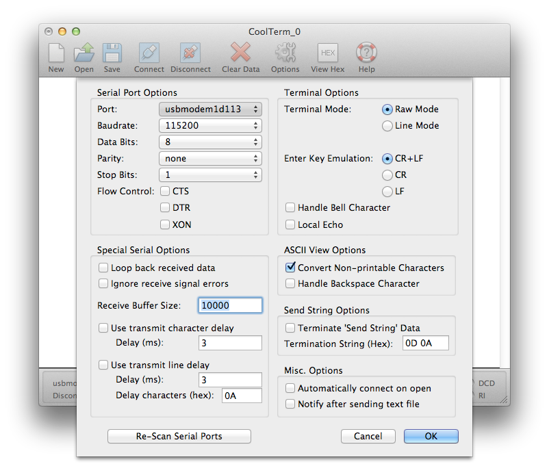
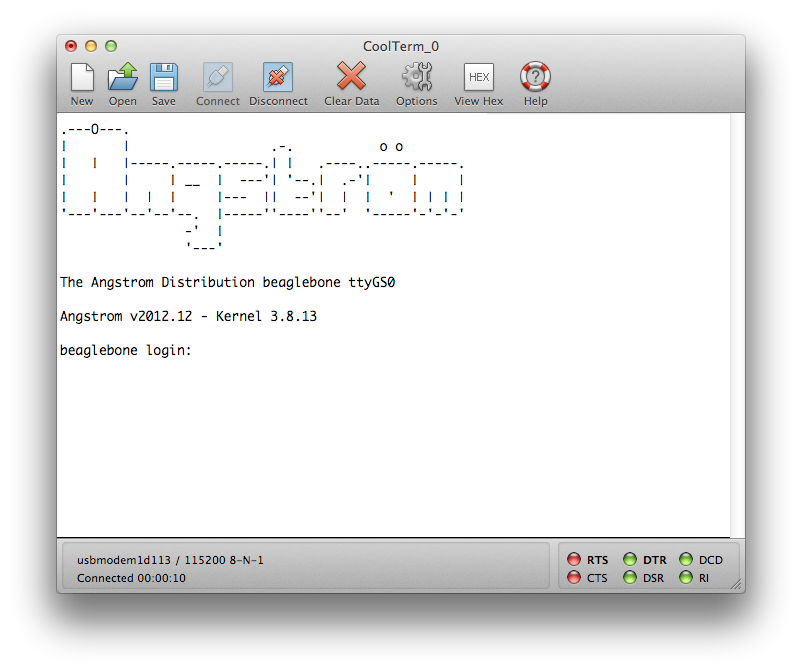
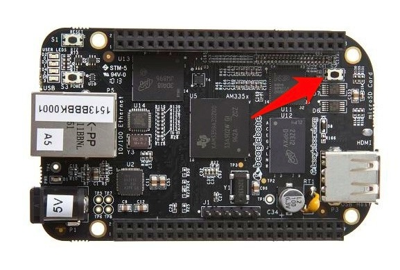

Bootstrapping the BeagleBone Black with Debian
Starting with a new board the first step is to plug the board into your laptop using the mini-USB cable provided. The BeagleBone has two USB ports, a full sized USB-A port, and a mini-USB port. The mini port is located on the reverse side of the board near the Ethernet jack.
The board should boot and you should see a solid blue light next to the 5V power jack. When startup is completed, a new mass storage device called BEAGLEBONE should appear on your desktop.
Open up the mass storage device and click on the START.htm file to open it in a browser. You should probably read through this file to familiarise yourself with the BeagleBone's capabilities.
If you do not want to go through the manual installation steps below we supply a disk image for the Beaglebone Black. The disk image is the latest version of Debian Wheezy with the steward and its dependancies already installed. The steward will auto-start when the Beaglebone is booted, although especially on the first boot it may take a few moments to start as it has to generate an RSA key on startup. Download the disk image, and install it as you would a normal version of the operating system.
NOTE: You should use the mini USB port on the underside of the board to connect the BeagleBone to your computer, this is located on the underside of the board to the left of the Ethernet jack.
NOTE: The board uses the same power supply as the previous BeagleBone. 5VDC, 1A, 2.1mm, center positive. The power supply is not supplied with the board. However if you are going to configure the board to use a WiFi adaptor you should use a supply with a 2A rating otherwise you'll get intermittent crashes due to brown outs.
Accessing the board
The BeagleBone Black ships with a copy of Angstrom Linux on the internal eMMC. While Angstrom isn't a good platform to run the steward, we do want to install both Network and Serial drivers for Mac OS X before we go ahead and swap out our operating systems. The first gives you network-over-USB access to your BeagleBone, the second direct serial access. You'll need both sets of drivers.
Plug the board into your computer using the USB cable, wait while the board boots. Open up the BEAGLEBONE volume and click on the START.htm file, go to Step #2 in the file.
Installing the Network Driver
Grab the Network (HoRNDIS-rel4.pkg) driver file from the BeagleBone's mass storage device by clicking on the link in the START.htm file. Install the driver on your Mac by clicking on the pkg file and following the instructions.
After installation you should at this point be able to access the onboard web server of the BeagleBone Black over the USB cable by going to http://192.168.7.2/ in a browser.
NOTE: In some cases you may not be able to directly access the board using SSH at this point. There seems to be a problem in some versions of the stock image that causes some boards to fail to bring up the SSH server properly.
Installing the FTDI Serial Driver
Grab the Serial (FTDISer.dmg) driver file from the BeagleBone's mass storage device by clicking on the link in the _START.htm file. Install the driver on your Mac by opening the dmg file and clicking on the enclosed pkg file and following the instructions.
NOTE: The enclosed driver is a patched version of the stock FTDI drivers. Even if you've installed FTDI serial drivers before you need to follow this step. The BeagleBone won't be accessible otherwise.
Connecting to the BeagleBone Black
There are four methods to connect to the board: USB Serial, FTDI Serial, TCP over USB and Ethernet.
NOTE: When you connect to the board the default root password is blank so just hit return to login to the board.
Connecting via USB Serial
Several /dev/tty.usbmodem* devices should be present when the board is plugged in via the mini-USB cable.

Open up CoolTerm or a similar program and you can connect to your board at 115,200 8-N-1 (Local Echo should be off) on one of these ttys offered by the board. Of the five offered by the board,
crw-rw-rw- 1 root wheel 18, 22 4 Sep 22:43 /dev/tty.usbmodem11
crw-rw-rw- 1 root wheel 18, 8 4 Sep 20:11 /dev/tty.usbmodem1d111
crw-rw-rw- 1 root wheel 18, 24 4 Sep 22:43 /dev/tty.usbmodem1d113
crw-rw-rw- 1 root wheel 18, 12 4 Sep 20:12 /dev/tty.usbmodem6
crw-rw-rw- 1 root wheel 18, 18 4 Sep 20:14 /dev/tty.usbmodem9
only /dev/tty.usbmodem1d113 connected for me. Your milage may vary at this point.

Connecting via FTDI Serial
Alternatively you can use a 3.3V FTDI-to-USB cable to connect to the debug (J1) header block. Pin 1 on the cable is the black wire and connects to pin 1 on the board, the pin with the white dot next to it.
Open up CoolTerm again and you can connect to your board at 115,200 8-N-1 (Local Echo should be off) via the usbserial port offered by the cable, e.g.
crw-rw-rw- 1 root wheel 18, 12 31 May 20:40 /dev/tty.usbserial-FTE4XVKD
While I've had this method up and working, I've had intermittent luck with it - USB Serial seems to be more reliable once you have the FTDI drivers installed and working on your Mac.
Connecting via network over USB
Plug the BeagleBone back into the mini-USB cable connected to your Mac, and wait for it to boot back up. When it has finished booting, you should be able to once again reach the onboard webpages at http://192.168.7.2/ in your browser, but you should also be able to SSH to the board,
ssh root@192.168.7.2
root@192.168.7.2's password:
root@beaglebone:~#
Connecting via the local network
Plug an Ethernet cable into the jack on the board. After a moment the two lights on the jack (green and yellow) should go live and indicate that it is on the network. You can either login to your board via one of the methods above to find out what its IP address is, or check your router.
root@beaglebone:~# ifconfig
eth0 Link encap:Ethernet HWaddr C8:A0:30:AF:C2:18
inet addr:192.168.1.90 Bcast:192.168.1.255 Mask:255.255.255.0
inet6 addr: fe80::caa0:30ff:feaf:c218/64 Scope:Link
UP BROADCAST RUNNING MULTICAST MTU:1500 Metric:1
RX packets:1843 errors:0 dropped:1 overruns:0 frame:0
TX packets:83 errors:0 dropped:0 overruns:0 carrier:0
collisions:0 txqueuelen:1000
RX bytes:150073 (146.5 KiB) TX bytes:12398 (12.1 KiB)
Interrupt:56
lo Link encap:Local Loopback
inet addr:127.0.0.1 Mask:255.0.0.0
inet6 addr: ::1/128 Scope:Host
UP LOOPBACK RUNNING MTU:65536 Metric:1
RX packets:4 errors:0 dropped:0 overruns:0 frame:0
TX packets:4 errors:0 dropped:0 overruns:0 carrier:0
collisions:0 txqueuelen:0
RX bytes:280 (280.0 B) TX bytes:280 (280.0 B)
usb0 Link encap:Ethernet HWaddr 06:74:70:BE:E7:97
inet addr:192.168.7.2 Bcast:192.168.7.3 Mask:255.255.255.252
UP BROADCAST RUNNING MULTICAST MTU:1500 Metric:1
RX packets:4688 errors:0 dropped:0 overruns:0 frame:0
TX packets:4537 errors:0 dropped:0 overruns:0 carrier:0
collisions:0 txqueuelen:1000
RX bytes:316153 (308.7 KiB) TX bytes:675250 (659.4 KiB)
If your router is capable you might want to configure it so that the BeagleBone's IP address is fixed in future and that it's got a local name that you can use rather than a raw IP address.
Installing Debian Wheezy
Download the latest image of Debian Wheezy, currently that debian-wheezy-7.2-armhf-3.8.13-bone30.img.xz.
The image comes as a .xz file. You can install the XZ Utils which will let you unzip the compressed archive by using MacPorts or Homebrew.
xz -d debian-wheezy-7.2-armhf-3.8.13-bone30.img.xz
After decompression is should be around 3.4GB, so you will need a micro SD card at least 4GB in size to handle the image. Go ahead and insert the microSD card in its adaptor into your Macbook.
Open up a Terminal window and type df -h, remember the device name for your micro SD Card. In my case it's /dev/disk1. We'll need to use the raw device, /dev/rdisk1.
Filesystem Size Used Avail Capacity iused ifree %iused Mounted on
/dev/disk0s2 699Gi 367Gi 332Gi 53% 96214802 86992771 53% /
devfs 206Ki 206Ki 0Bi 100% 714 0 100% /dev
map -hosts 0Bi 0Bi 0Bi 100% 0 0 100% /net
map auto_home 0Bi 0Bi 0Bi 100% 0 0 100% /home
/dev/disk1s1 59Gi 33Gi 26Gi 57% 8739054 6768902 56% /Volumes/SD Card
Unmount the card,
sudo diskutil unmount /dev/disk1s1
rather than ejecting it by dragging it to the trash. Then in the Terminal change directory to your downloads folder and type
sudo dd bs=1m if=debian-wheezy-7.2-armhf-3.8.13-bone30.img of=/dev/rdisk1
if the above command report an error "dd: bs: illegal numeric value", change bs=1m to bs=1M. The card should automatically remount when dd is done.
Eject the card with the command,
sudo diskutil eject /dev/rdisk1
Booting from the SD Card

Power the BeagleBone Black down and locate the "User Boot" button. It's located on the top side of the board, directly above the micro SD card slot which is located on the reverse side along with the mini and micro USB sockets.
{kind=link}
The BeagleBone Black will try to boot the internal Angstrom image by default. To boot from our SD Card, you’ll need to hold down the User Boot button while powering-on the board. You should see two of the blue lights come on. At this point you can let go of the User Boot button.
NOTE: Do not hold the User Boot button down too long as the board will attempt to flash the contents of the card to the internal eMMC. Take your finger off the button when two of the blue LEDs are illuminated. If you see all four, you've held your finger on the button too long.
NOTE: If you don't see any lights come on, then it is usually because of a power issue - if you are powering over USB from your computer then try connecting to another power supply such as a USB charger.
Connecting to the Beaglebone
When it boots the Beaglebone Black should bring up a sshd server, go to your router and find out the board's IP address. If your router is capable you might want to configure it so that the board's IP address is fixed in future and that it's got a local name that you can use rather than a raw IP address.
In any case connect to the Beaglebone Black with ssh. The username is "debian" and the password is "debian".
ssh debian@192.168.1.X
debian@192.168.1.X's password:
Linux debian-armhf 3.8.13-bone30 #1 SMP Thu Nov 14 02:59:07 UTC 2013 armv7l
The programs included with the Debian GNU/Linux system are free software;
the exact distribution terms for each program are described in the
individual files in /usr/share/doc/*/copyright.
Debian GNU/Linux comes with ABSOLUTELY NO WARRANTY, to the extent
permitted by applicable law.
Last login: Fri Nov 22 18:41:16 2013 from dastardly.lan
debian@debian-armhf:~$
NOTE: The "root" account is disabled by default, access to root-privileges is via sudo only.
NOTE: YOU SHOULD CHANGE THE DEFAULT PASSWORD THE FIRST TIME YOU LOGIN TO THE BEAGLEBONE BLACK.
Flashing to eMMC (optional)
With the SD Card present in the microSD slot the Beaglebone Black will now boot into Debian whenever the User Boot button is held as the power is turned on. If you do not hold the User Boot button down on boot the into the default Angstrom distribution which is still present on the internal eMMC.
This can get fairly tedious. If you want you can flash the image we've just booted onto the internal eMMC. Once the default Angstrom image is replaced, you won't have to hold down the User Boot button again if there is an SD Card present.
To do this proceed as below,
cd ~
sudo su
wget http://s3.armhf.com/debian/wheezy/bone/debian-wheezy-7.2-armhf-3.8.13-bone30.img.xz
xz -cd debian-wheezy-7.2-armhf-3.8.13-bone30.img.xz > /dev/mmcblk1
this will take a while, go get a coffee and a toasted sandwich. When it is complete your command prompt will return, and the internal eMMC memory will have a default version of Wheezy installed. Since the image is pretty large you should delete it at this point
rm debian-wheezy-7.2-armhf-3.8.13-bone30.img.xz
To test it has worked you should un-plug the power supply, remove the microSD card and then connect the power again. It should boot back up into Debian.
From this point, to boot from the SD card you simply need to place the card in the microSD slot and connect the power. No more holding down the User Boot button.
NOTE: The rest of the instructions assume you have booted with the SD card in place, and are therefore running the OS image on the card, rather than the image on the internal eMMC. If you're not sure
Reszing the disk image
One of the main reasons to boot from the SD card rather than the internal eMMC image is that we need more room to work and right now the prebuilt Debian image is sized to fit neatly into the internal eMMC space. However the image can be resized to take full advantage of additional space available on our SD card.
sudo fdisk /dev/mmcblk0
Command (m for help): p
Disk /dev/mmcblk0: 3904 MB, 3904897024 bytes
4 heads, 16 sectors/track, 119168 cylinders, total 7626752 sectors
Units = sectors of 1 * 512 = 512 bytes
Sector size (logical/physical): 512 bytes / 512 bytes
I/O size (minimum/optimal): 512 bytes / 512 bytes
Disk identifier: 0x80000000
Device Boot Start End Blocks Id System
/dev/mmcblk0p1 * 2048 4095 1024 1 FAT12
/dev/mmcblk0p2 4096 3751935 1873920 83 Linux
Command (m for help): d
Partition number (1-4): 2
Command (m for help): n
Partition type:
p primary (1 primary, 0 extended, 3 free)
e extended
Select (default p): p
Partition number (1-4, default 2): 2
First sector (4096-7626751, default 4096):
Using default value 4096
Last sector, +sectors or +size{K,M,G} (4096-7626751, default 7626751):
Using default value 7626751
Command (m for help): p
Disk /dev/mmcblk0: 3904 MB, 3904897024 bytes
4 heads, 16 sectors/track, 119168 cylinders, total 7626752 sectors
Units = sectors of 1 * 512 = 512 bytes
Sector size (logical/physical): 512 bytes / 512 bytes
I/O size (minimum/optimal): 512 bytes / 512 bytes
Disk identifier: 0x80000000
Device Boot Start End Blocks Id System
/dev/mmcblk0p1 * 2048 4095 1024 1 FAT12
/dev/mmcblk0p2 4096 7626751 3811328 83 Linux
Command (m for help): w
The partition table has been altered!
Calling ioctl() to re-read partition table.
WARNING: Re-reading the partition table failed with error 16: Device or resource busy.
The kernel still uses the old table. The new table will be used at
the next reboot or after you run partprobe(8) or kpartx(8)
Syncing disks.
and now we've altered the partition table go ahead and reboot.
Once the board has rebooted, ssh back into and go ahead and resize the file system to fill the now larger partition,
sudo resize2fs /dev/mmcblk0p2
resize2fs 1.42.5 (29-Jul-2012)
Filesystem at /dev/mmcblk0p2 is mounted on /; on-line resizing required
old_desc_blocks = 1, new_desc_blocks = 1
The filesystem on /dev/mmcblk0p2 is now 952832 blocks long.
all of the space on the SD card is now available to use, on a 4GB card for instance we should have roughly 3.1GB free,
Filesystem Size Used Avail Use% Mounted on
rootfs 3.6G 356M 3.1G 11% /
/dev/root 3.6G 356M 3.1G 11% /
devtmpfs 248M 0 248M 0% /dev
tmpfs 50M 228K 50M 1% /run
tmpfs 5.0M 0 5.0M 0% /run/lock
tmpfs 100M 0 100M 0% /run/shm
/dev/mmcblk0p1 1004K 478K 526K 48% /boot/uboot
NOTE: The booted device is always device 0, i.e. mmcblk0. The internal eMMC always has the mmcblkXboot0 and mmcblkXboot1 entries. If the device is booted from eMMC the entries will be mmcblk0boot0 and mmcblk0boot1. If the device is NOT booted from eMMC the entries will be mmcblk1boot0 and mmcblk1boot1.
Changing the hostname
Edit /etc/hostname to be
steward
and /etc/hosts to be
127.0.0.1 localhost
127.0.0.1 steward
Updating the OS
We need to update the list of repositories, and upgrade to the latest packages, before proceeding.
sudo apt-get update
sudo apt-get upgrade
Installing Node.js
The default package served by apt-get on the current version of Whezzy is Node.js 0.6.19~dfsg1-6. Which is horribly out of date. We're going to have to build from the GitHub repository.
We'll need Git to check it out from the repository. The easiest way to install that is using apt-get,
sudo apt-get install git-core build-essential
You'll need to configure your Git identity before checking out the source otherwise things won't go smoothly,
git config --global user.name "Alasdair Allan"
git config --global user.email alasdair@babilim.co.uk
Then go ahead and checkout Node.js
git clone https://github.com/joyent/node.git
change directory and switch to v0.10.22 release.
cd node
git checkout v0.10.22 -b v0.10.22
Now go ahead and build,
./configure --without-snapshot
make
This will take a long time, so go make a coffee or a toasted sandwich.
NOTE: There is a bug in the snapshot feature of the V8 engine and you must disable it. Building with snapshot turned on appears to work, however the binaries will seg fault at run time.
Now go ahead and install node and npm,
sudo make install
You might want to install nodewiki at this point,
sudo npm install -g nodewiki
Installing Node Version Manager
Go ahead and install the node version manager (nvm),
git clone git://github.com/creationix/nvm.git ~/.nvm
echo ". ~/.nvm/nvm.sh" >> ~/.bashrc
. ~/.nvm/nvm.sh
make our version of Node the default
nvm alias default v0.10.22
Installing node-gyp
We might also need node-gyp the Node.js native addon build tool
git clone https://github.com/TooTallNate/node-gyp.git
cd node-gyp
sudo npm install -g node-gyp
this will be needed if we run into problems and need to rebuild any add on modules with code changes.
Installing Other Dependances
We'll also need some other libraries that aren't installed by default in on the Pi. You should go ahead and install these now,
sudo apt-get install libpcap-dev
sudo apt-get install libavahi-client-dev
sudo apt-get install libavahi-core7
sudo apt-get install libnss-mdns
sudo apt-get install avahi-discover
sudo apt-get install libavahi-compat-libdnssd-dev
sudo apt-get install libusb-1.0-0-dev
sudo apt-get install libusbhid-common
sudo apt-get install libusb-dev
sudo apt-get install libglib2.0-dev
sudo apt-get install automake
sudo apt-get install libudev-dev
sudo apt-get install libical-dev
sudo apt-get install libreadline-dev
sudo apt-get install libdbus-glib-1-dev
sudo apt-get install libexpat1-dev
sudo apt-get install bluetooth
Installing BlueZ
The noble library library is tested with BlueZ 4.100 and 4.101. The stock BlueZ available on Wheezy is 4.99, but this does not support Bluetooth LE devices, so you need to go ahead and re-install by hand. Download the version 4.101 and then,
wget https://www.kernel.org/pub/linux/bluetooth/bluez-4.101.tar.gz
tar -zxvf bluez-4.101.tar.gz
cd bluez-4.101
./configure
make
sudo make install
This will take a while, although nothing like as long as the node.js installation.
For some reason hciconfig isn't correctly installed during the make install phase and you will have to manually copy it from the build directory to /usr/local/bin,
sudo cp tools/hciconfig /usr/local/bin
NOTE: Current testing is using the IOGEAR GBU521 Adaptor, however other adaptors have been tested and appear to work.
Enabling Bluetooth
Debian Wheezy comes with Bluetooth disabled, you need to go ahead and add the following modules to /etc/modules
# /etc/modules: kernel modules to load at boot time.
#
# This file contains the names of kernel modules that should be loaded
# at boot time, one per line. Lines beginning with "#" are ignored.
# Parameters can be specified after the module name.
alias net-pf-31 bluez
alias bt-proto-0 l2cap
alias bt-proto-1 hci
alias bt-proto-2 sco
alias bt-proto-3 rfcomm
alias bt-proto-4 bnep
and then run
depmod -a
before rebooting.
The Bluetooth Daemon should automatically start. Log back into your board, and making sure your Bluetooth LE USB adaptor is plugged in, type
hciconfig
you should see something like this,
hci0: Type: BR/EDR Bus: USB
BD Address: 00:1A:7D:DA:71:0C ACL MTU: 310:10 SCO MTU: 64:8
UP RUNNING PSCAN
RX bytes:979 acl:0 sco:0 events:43 errors:0
TX bytes:910 acl:0 sco:0 commands:43 errors:0
Just to check things are working correctly type,
sudo hcitool lescan
and you should see any Bluetooth LE peripherals that are within range, e.g.
LE Scan ...
78:C5:E5:6C:D5:EA (unknown)
78:C5:E5:6C:D5:EA Hone
Hit ^C to stop the scan.
Installing the Steward
Check out the steward from its Git repository,
git clone https://github.com/TheThingSystem/steward.git
cd steward/steward
Delete the node_modules directory if it exists, as the depending on the last build these may be for OS X, and go ahead and install the libraries,
rm -rf node_modules
npm install -l
This will take a while. Go make coffee.
Instructions for starting the Steward
In the steward directory type
sudo ./run.sh
Then follow these instructions for starting the steward.
Appendix - Starting at boot time
Copy the steward.sh file from the steward/platforms/beaglebone/init.d/ directory into /etc/init.d,
sudo cp steward.sh /etc/init.d/steward
sudo chmod uog+rx /etc/init.d/steward
this script starts the steward at boot time.
You then need establish symbolic links to this script in the relevant etc/rcX.d/ directories,
sudo update-rc.d steward defaults
if you ever want to stop the steward starting at boot time you should do,
sudo update-rc.d steward remove
Appendix - Cloning a Bootable SD Card
There are times when you'll want to clone your Beaglebone SD Card. The easiest way to do this is shutdown the Beaglebone, take the card out, and insert it into your Macbook.
IOpen up a Terminal window and type df -h, remember the device name for your SD Card. In my case it's /dev/disk1. We'll need to use the raw device, /dev/rdisk1.
Filesystem Size Used Avail Capacity iused ifree %iused Mounted on
/dev/disk0s2 699Gi 367Gi 332Gi 53% 96214802 86992771 53% /
devfs 206Ki 206Ki 0Bi 100% 714 0 100% /dev
map -hosts 0Bi 0Bi 0Bi 100% 0 0 100% /net
map auto_home 0Bi 0Bi 0Bi 100% 0 0 100% /home
/dev/disk1s1 59Gi 33Gi 26Gi 57% 8739054 6768902 56% /Volumes/SD Card
Unmount the card,
sudo diskutil unmount /dev/disk1s1
rather than ejecting it by dragging it to the trash. Then in the Terminal change directory to your Desktop folder and type
sudo dd bs=1m if=/dev/rdisk1 of=sdcard.img
if the above command report an error "dd: bs: illegal numeric value", change bs=1m to bs=1M.
A disk image will be created on your Desktop. You can use this image as you would a normal install image for the Beaglebone.
NOTE: The size of the image will be dependent on the size of the SD Card you are using on the Beaglebone.